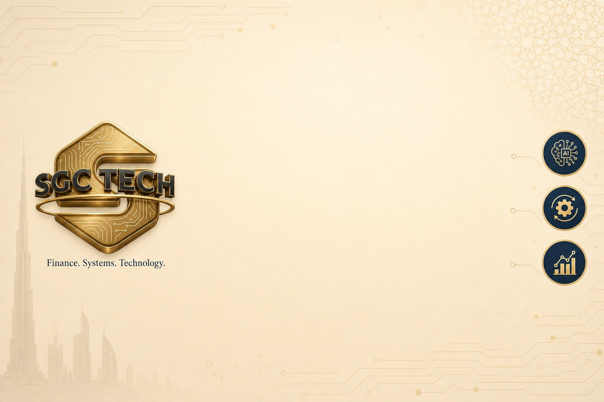

One source of truth for the Aurum theme family.
A tiny shared layer that keeps the Aurum Backend Theme and the Aurum Website Theme perfectly in sync. It defines the SGC palette, type scale, spacing, radius, shadows and motion timings once — as SCSS variables and as runtime CSS custom properties — so a dense data screen and a marketing page read as one brand.
web._assets_primary_variables — in scope for both the backend and website SCSS.:root CSS custom properties for JS, OWL components and snippet animations.prefers-reduced-motion fallback baked into the motion tokens.This is a dependency for the Aurum themes. Install a theme and this layer installs with it.
Finance. Systems. Technology.
Support: info@sgctech.ai